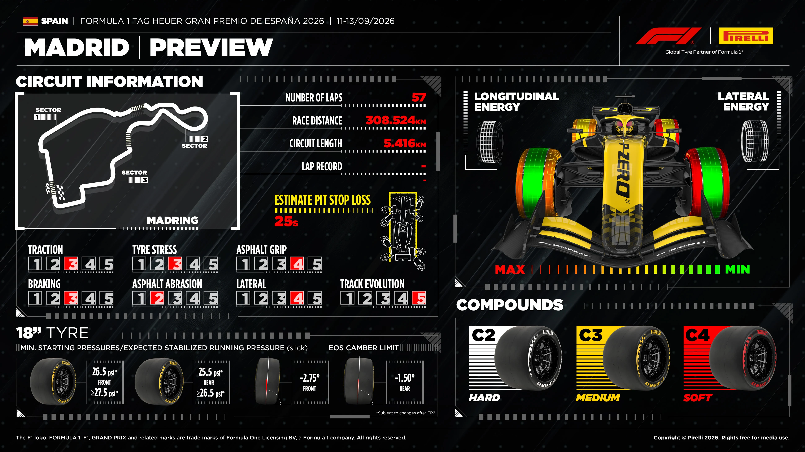
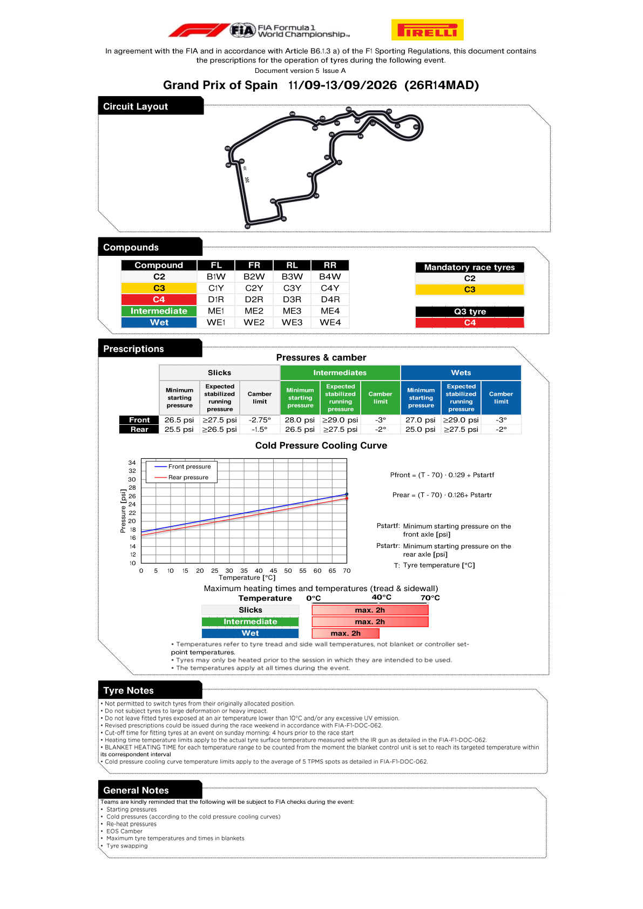

Tyres & Strategy
Confirmed C2/C3/C4 allocation, axle-specific pressures and Pirelli's Madrid preview.
FIA official tyre documents
Official source; curated transcription may await review. Linked PDFs are the authority. Discovery does not extract or verify numeric values, and does not replace the curated material below.
Last successful FIA document discovery: 2026-09-11T14:56:32.987219+00:00. This is retrieval time, not issue time; newer revisions may exist.

FIA tyre prescriptions (Document 1, Issue A)

| Tyre | Axle | Minimum start | Expected stabilised running | Camber limit |
|---|---|---|---|---|
| Slick | Front | 26.5 psi | ≥27.5 psi | -2.75° |
| Slick | Rear | 25.5 psi | ≥26.5 psi | -1.5° |
| Intermediate | Front | 28.0 psi | ≥29.0 psi | -3° |
| Intermediate | Rear | 26.5 psi | ≥27.5 psi | -2° |
| Wet | Front | 27.0 psi | ≥29.0 psi | -3° |
| Wet | Rear | 25.0 psi | ≥27.5 psi | -2° |
C2 and C3 are the designated mandatory race tyres; C4 is the Q3 tyre. Maximum heating is two hours: up to 70°C for slicks and intermediates, 40°C for wets. These are tyre-surface temperatures, not blanket-controller settings. FIA/Pirelli may revise the prescriptions during the weekend; the preview flags possible changes after FP2.
Stint predictor and remaining tyre sets
No Madrid F1 practice or race sample exists before Friday running. The confirmed compound nomination and pressure prescription do not establish an optimal pit window, degradation rate or each driver's remaining new/used sets. A lap-number strategy prediction and a post-qualifying tyre-set table await their own evidence; Italy's counts and stint lengths are not transferred here.